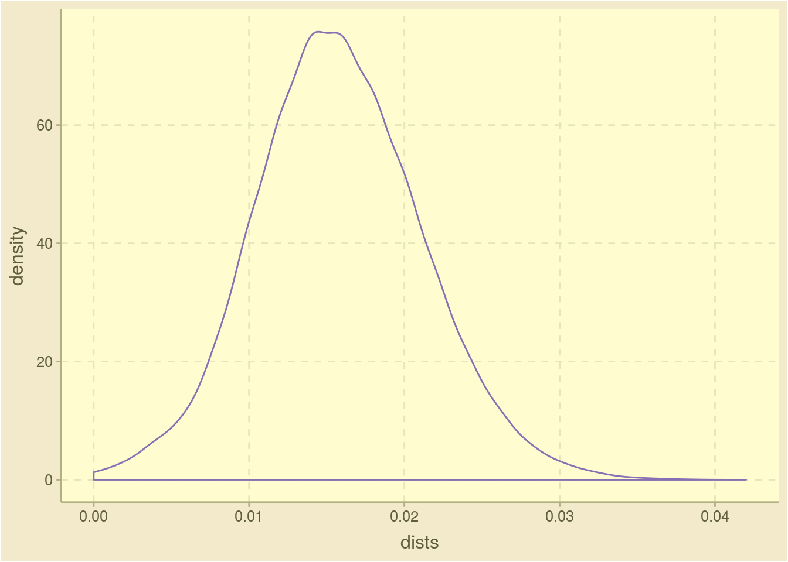

2 More realistic mu
Note that the extremely high value of mu (0.1) produces sequences that rapidly diverge radically from the ancestor. To make the simulation a little more realistic, drop the mutation rate down to 1 in 1000 and try again.
The average pairwise HD is 7.89 and normalized by the length of the sequence it is 0.016. The distribution is shown in the Figure below and the deciles are listed in the following Table. The last two tables in this section show the arguments used to call sim_pop and a summary of each genealogy.

Figure 2.1: Density plot of the pariwise distances in the last generation
| Decile | Value |
|---|---|
| 0% | 0.000 |
| 10% | 0.010 |
| 20% | 0.012 |
| 30% | 0.012 |
| 40% | 0.014 |
| 50% | 0.016 |
| 60% | 0.016 |
| 70% | 0.018 |
| 80% | 0.020 |
| 90% | 0.022 |
| 100% | 0.042 |
| Argument | Value |
|---|---|
| Number of Ancestors | 1 |
| Sequence Length | 500 |
| r0 | 2 |
| Number of Generations | 9 |
| Minimum Population Size | Inf |
| Mutator Function | mutator_uniform_fun |
| Mutator: mu | 0.001 |
| Fitness Evaluator | fitness_evaluator_uniform_fun |
| Additional Fitness Evaluator Arguments | None |
| Gen. Num. | n | Dist. to Ances. | Normalized Dist. | Fitness Score | Min. Fitness Score |
|---|---|---|---|---|---|
| 0 | 1 | 0.000000 | 0.0000000 | 0.8786059 | 0.8786059 |
| 1 | 2 | 0.000000 | 0.0000000 | 0.4703541 | 0.1840021 |
| 2 | 4 | 0.500000 | 0.0010000 | 0.5094669 | 0.0964329 |
| 3 | 8 | 1.250000 | 0.0025000 | 0.4111367 | 0.0724550 |
| 4 | 16 | 1.750000 | 0.0035000 | 0.5180557 | 0.1412758 |
| 5 | 32 | 2.187500 | 0.0043750 | 0.4959503 | 0.0395287 |
| 6 | 64 | 2.734375 | 0.0054688 | 0.5609378 | 0.0030736 |
| 7 | 128 | 3.281250 | 0.0065625 | 0.5215620 | 0.0020678 |
| 8 | 256 | 3.773438 | 0.0075469 | 0.4953000 | 0.0006268 |
| 9 | 512 | 4.230469 | 0.0084609 | 0.5012812 | 0.0036371 |